Ctfplotter plots noise-subtracted, rotationally averaged power spectra from tilt series data and allows one to determine the position of the first zero of the microscope CTF. The power spectra are obtained by extracting small squares of image (referred to as tiles) that overlap by 50%, taking their 2D Fourier transforms, rotationally averaging the transforms to obtain one-dimensional curves, dividing by the corresponding curves obtained from images consisting only of noise, and summing these 1D curves. Once defocus is determined from such power spectra, the phase inversions of the CTF can be corrected with the program Ctfphaseflip. Defocus can be found in angular subranges of the tilt series. The defocus values are stored in a table so that they can be visualized, deleted, or recomputed if necessary. All of the values in the table are saved to the defocus file, which is provided as input to Ctfphaseflip.
| Angles | Open the tilt angle range and tile selection dialog. |
| Fitting | Open the Fitting Ranges and Methods dialog. |
|
| Zoom in again after zooming back out. |
| Zoom out after zooming in. | |
|
| Adding Non-center Tiles button. If this button is enabled, the current estimation is based only on center tiles; push this button to add non-center tiles to the current estimation. |
|
| Print the plotted curves. |
|
| Bring up Qt assistant to display this page. |
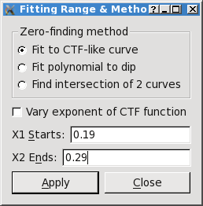
Fitting to a CTF-like curve involves finding four parameters, or five if the
option Vary exponent of CTF function is selected. Varying the exponent
can allow the curve to fit better to the width of the dip around the first
zero, but since it adds a parameter, it can destabilize the fitting and
produce bad results in some cases. One of the parameters of the curve is the
defocus.
The range of the curve is set from the entries X1 Starts and X2 Ends. When the program first starts, it sets these values to be about 0.1 frequency unit before the first zero, and close to the second zero, respectively, based on the expected defocus. If necessary, you should adjust the starting value so that it is to the right of where the fitted curve strongly deviates from the actual. If the red curve become noisy and falls off before a second zero, you should also reduce the ending point of the fit to exclude that region. See the example below.
The fit does rely on an initial approximate value for the defocus and may fail if the actual defocus is far from that value. It takes this value either from the expected defocus or from the current defocus estimate, depending on whether the option is selected to use the current defocus estimate in the Tilt Angle Range Dialog. If the defocus revealed by the power spectrum is far from the expected defocus, you should either change the value of the expected defocus, or select the option to use the current defocus estimate and make sure that estimate is approximately correct.
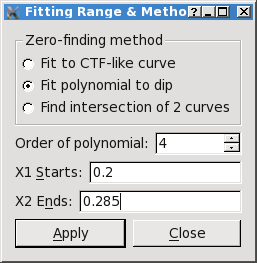
You can also fit a polynomial to the region around the first zero.
The Order of polynomial spin button allows you to select an order
between 2 and 6, which involves finding 3 to 7 parameters. The goal here is
to get a smooth curve through the dip; the minimum
of the curve is taken as the location of the first zero.
As for CTF-like fitting, the range of the curve is set from the entries X1 Starts and X2 Ends. Since you are just trying to localize the dip at the first zero, you should restrict the range as necessary to get a good fit there.
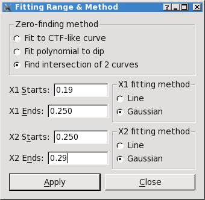
Finding the zero at the intersection of two curves involves fitting two
separate curves, before and after the first zero. Each can be fit to either a
straight line or a Gaussian over the selected range. The program finds the
intersection of the two curves, if possible, and assigns that as the first
zero.
X1 sets the fitting range for the curve before the first zero, drawn in green. Use the X1 fitting method radio button to select whether to fit to a straight line or to a Gaussian.
X2 sets the fitting range for the curve after the first zero, drawn in blue. Use the X2 fitting method radio button to fit to a straight line or to a Gaussian.
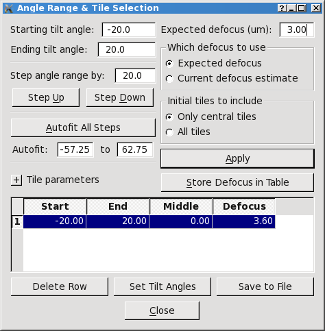
Expected defocus:
This field starts out with the expected defocus value
specified in the parameter file, but you can change it. Initially, this value
is used to compute the expected frequency of the first zero of the power
spectrum and to set
the initial values of the X1 and X2 ranges which determine what segments of
the power spectrum are fitted.
When non-center tiles are being included, Ctfplotter uses a defocus to
compute shifts needed to align the power spectra of non-center
tiles with the CTF curve of center tiles. With the radio button group
Which defocus to use, you can specify
whether to use the expected defocus shown in the Expected defocus
(um) Edit field or the defocus previously found by the
program as the defocus for computing the shifts.
Starting tilt angle
Ending tilt angle:
The views with tilt angle
greater than or equal to the starting angle but less than or equal to the
ending angle will be included in the estimation. If you enter a value beyond
the end of the range of angles in the tilt series, it will be adjusted to the
starting or ending angle of the series.
Center defocus tol:
The image region with defocus difference less than this tolerance is
defined as the center region.
Left defocus tol:
Right defocus tol:
These two entries set the maximum defocus difference for adding in
tiles from image regions to the left and right of the center region,
respectively,
after the "Adding Noncenter Tiles" button is pushed,
or if the All tiles radio
button is selected.
You can set one to be small and the other large in order to
assess the results of
adding in tiles from only one side of the image, but this will mix tiles at
lower and higher defocuses unless the tilt angles are all positive or all
negative.
Tile size:
The tile size in pixels.
Tilt axis angle:
The amount in degrees that the tilt axis deviates from being vertical
(Y axis).
Initial tiles to include radio
button group:
Choose whether or not to include the noncenter tiles in the estimation
when computing the power spectrum.
If Only central tiles is checked, only the center region defined by
Center defocus tol will be
included in the next computation, and the "Adding Non-center Tiles" button
will be enabled. You need to push that button to add the left region
defined by Left defocus tol and the right region
defined by Right defocus tol
to the estimation.
If All tiles is checked,
all regions (center, left, right) will be included when the curve is
recomputed,
and the "Adding Non-center Tiles" button will be disabled.
Store Defocus in Table:
Push this button to store
the defocus found for
the selected views in the angles and defocus table. The defocus
indicated by "D" is stored unless a second zero has been clicked, in which
case the average defocus indicated by "D-avg" is stored.
Angles and Defocus Table:
This table shows the starting and ending tilt angle,
the middle of the angular range, and the defocus value for each range where
you have stored results. The lines are in order by the middle of the angular
range. When you store a value for an angular range matching that of an
existing line in the table, the existing defocus value is replaced with the
new one. When the program starts, this table is loaded with values from an
existing version of the output file. Below the table are three buttons that
operate on the table:
Push the Delete Row button to delete the entry for the currently selected row of the table. If you store results for an angular range and then want to replace them with results from a wider or narrower range, you would need to delete the row with the initial results.
Push the Set Tilt Angles button to reset the starting and ending tilt angles to the values on the currently selected row of the table and recompute the power spectrum.
Push the Save to File button to write the contents of the angles and defocus table to the output file.
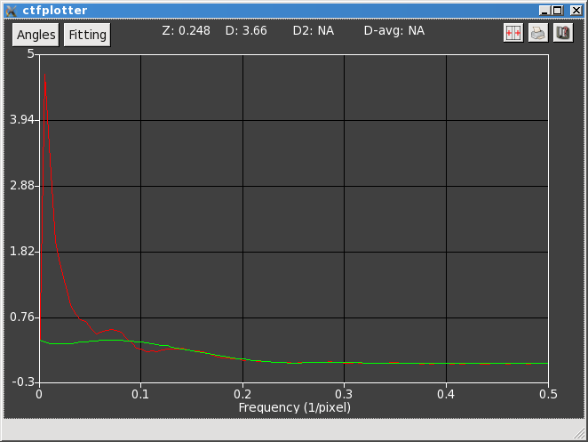
The range of the display in Y is dominated by the power at low frequencies, so
it is essential to zoom the display. This graph was zoomed by pressing the
left mouse button with the cursor just at the place where the green and red
curves diverge (at ~0.25 in X), then dragging the mouse to just below the
curves and just to the left of 0.8 to set the lower right corner of the rubber
band. Then the window looks like this:
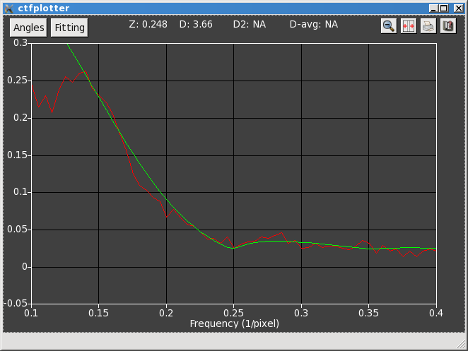
Now we can see more clearly that the background subtraction is giving a
reasonable power spectrum that is close to flat at high frequencies.
The next step is to add in all of tiles, either by pushing the "Adding
Non-center Tiles" button or by opening the Angle range dialog and switching to
the All tiles option. These two methods will give slightly different
results, and the latter is actually preferable.
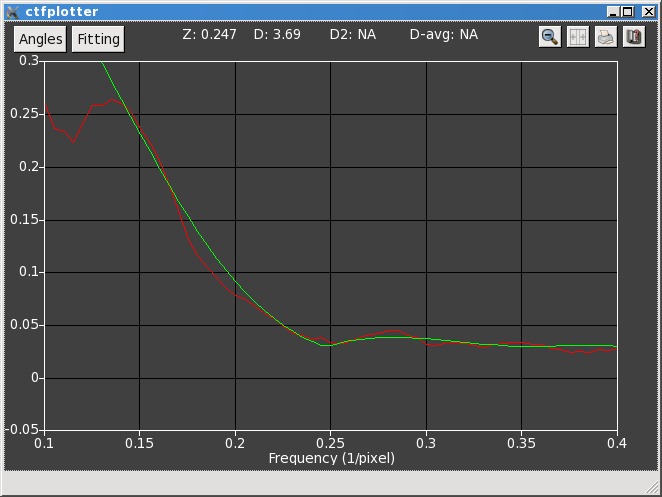
The power spectrum is much smoother and it is now easier to see that it has a
discernable dip, but that the green
curve does not fit very well. If we open the Fitting Range & Method dialog, we
see that it is fitting from 0.43 to 0.78, a range that was determined from the
nominal defocus but is not quite appropriate for the actual defocus. The
range was changed to what was shown above in the dialog: the left side was
moved to 0.38 to include more of the falling phase of the power spectrum, and the
right side was reduced to 0.58 because the power spectrum drops off after that
point, well before its second zero. At this point it is also clear that the
actual defocus is different from 3 microns, so we select the Current
defocus estimate radio button in the Angle Range dialog so that the
shifting from non-centered tiles will be more accurate.
If the fitting were unstable, a better way to do this would be to
change the Expected defocus entry.
After recomputing the curves and zooming the display again, it looks
like this:
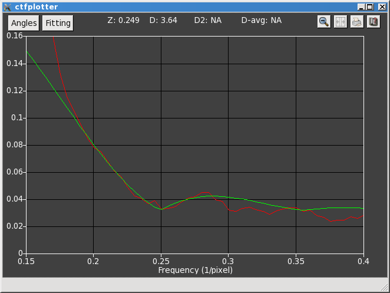
Here we see that the
CTF-like fitting works fairly well near the bottom of the dip, and that it
leads to a defocus estimate significantly different from the nominal defocus.
Turning on the Vary exponent of CTF function gives a slightly better
fit:
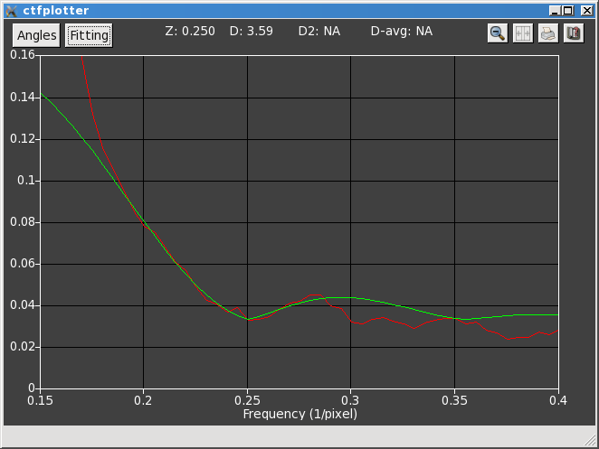
This fitting method can now be used over different angular ranges, and the
results can be stored from each range. Although there is no need to try the
different fitting methods with this data set, they are illustrated next.
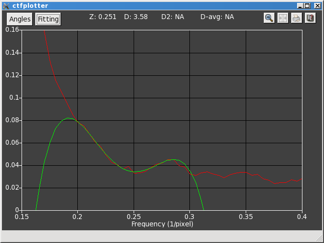
This panel shows the power spectrum for a different angular range (-50 to -10
degrees) with a
fourth-order polynomial fit to the frequency range shown in the dialog above.
As is typical of polynomials, the green curves goes off wildly outside the
fitting range.
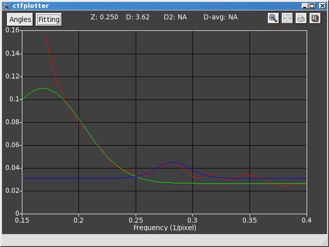
This panel shows the power spectrum for the original angular range with
determination of the zero from the intersection of two curves, with the
frequency range as shown in the dialog above.